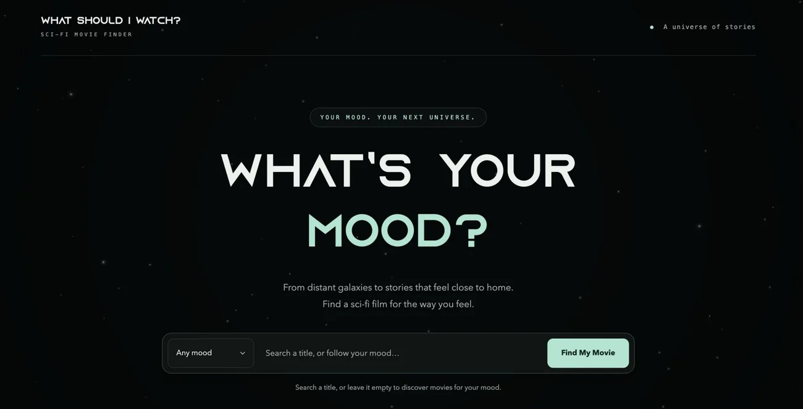

Selected work / 02
What Should I Watch?
Freddy and I built a sci-fi movie finder that uses The Movie Database (TMDB) API. Visitors can pick from six moods or search by title, then browse posters, summaries, and movie details.
We dropped the separate genre and date filters after mapping the user flow. The final design keeps the mood selector up front and translates each mood into a set of genres for the API search.
